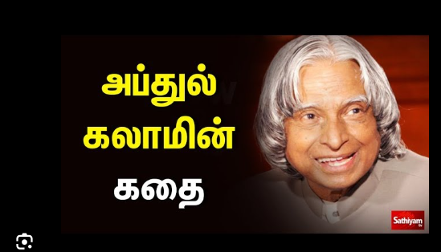
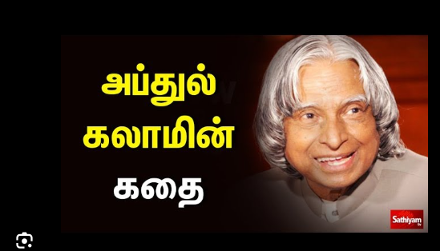
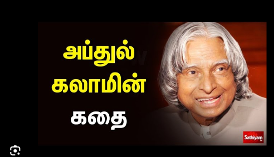

இந்தியாவின் மகாராஷ்டிரா மாநிலத்தில் வாழ்ந்த ஆன்மீக குருவும், இந்துக்களாலும் இஸ்லாமியர்களாலும் போற்றப்படும் புனிதத் துறவியும் தான் சாய் பாபா (Sai Baba). தீவிர சிவ பக்தர்களான தாய் தந்தையருக்கு இவர் பிறந்திருந்தாலும், இவர் முஸ்லிம் பக்கீர் ஒருவராலேயே வளர்க்கப்பட்டார். அதனாலேயே இரு மதத்தாரும் இவரைப் போற்றி வணங்குகின்றனர். சாய் பாபா தான் வாழ்ந்த காலத்தில் பல்வேறு அற்புதங்களையும் நிகழ்த்தியுள்ளார். மேலும் பல்வேறு செயல்கள் மூலம் இந்து மற்றும் முஸ்லிம் மத இணக்கத்தையும் ஏற்படுத்தியுள்ளார். இவர் சமாதி அடைந்த இடமான சீரடி தற்போது பல்லாயிரக்கணக்கான மக்கள் நாள்தோறும் வந்து தொழும் புண்ணியத் தலமாக விளங்குகிறது.
இந்து மதம் (Hinduism), தமிழில் இந்து சமயம், இந்தியாவிலும், உலகளவிலும் பின்பற்றப்படும் ஒரு முக்கிய சமயமாகும். இது உலகின் பழமையான சமயங்களில் ஒன்றாக கருதப்படுகிறது. இந்து மதம் பல்வேறு நம்பிக்கைகள், பழக்கவழக்கங்கள் மற்றும் வழிபாட்டு முறைகளைக் கொண்டது.
பிள்ளையார் கதை: பார்வதி தேவி மஞ்சள் களிமண்ணால் பிள்ளையாரை உருவாக்கி, அதற்கு உயிர் கொடுத்தாள். சிவன் வந்தபோது, பிள்ளையார் அவரை உள்ளே விடாமல் தடுத்ததால், சிவன் கோபம்கொண்டு அவரது தலையை கொய்துவிட்டார். பார்வதியின் துயரம் கண்டு வருந்திய சிவன், யானையின் தலையை பொருத்தி பிள்ளையாருக்கு உயிர் கொடுத்தார். இதுவே பிள்ளையாரின் யானை முகம் கொண்ட கதை.

ஏபிஜே அப்துல் கலாம், ஒரு புகழ்பெற்ற இந்திய விஞ்ஞானி மற்றும் இந்தியாவின் 11வது குடியரசுத் தலைவராக அறியப்பட்டவர். இவர் ராமேஸ்வரத்தில் பிறந்து வளர்ந்தார், மேலும் இந்தியாவின் விண்வெளி மற்றும் ஏவுகணைத் திட்டங்களில் முக்கிய பங்கு வகித்தார். அவரை இந்திய மக்கள் "ஏவுகணை நாயகன்" என்று அன்புடன் அழைத்தனர்.
Characters: 0